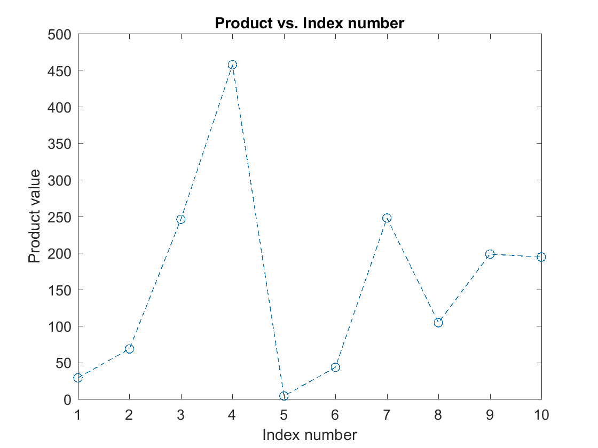

Contents
Header
% ----------------------------------- % HOMEWORK 1 % % Author: Hunter Ducharme % Class: AERO 220 % Professor: Dr. Raihan % Due date: 07 Feb 2017 % -----------------------------------
Exercise 1
clc; clear; close; % Creates a matrix with integers from 1 to 10. A = floor(10*rand(10)); % Vertex 1 i = 4; j = 2; % Vertex 2 k = 8; l = 6; % 1.1 Write a program to find sum of submatrix. mySum = 0; for x_index = i:1:k for y_index = j:1:l mySum = mySum + A(x_index, y_index); end end % 1.2 Using MATLAB's sum() function X = A([i:k], [j:l]); matlabSum = sum(sum(X));
Exercise 2
clc; clear; close; A = [3,4,5; 2,1,-5]; % 2x3 matrix. B = [8,7; -6,6; -3,1]; % 3x2 matrix. % 2.1 Done on paper. % 2.2 Evaluate the summation of A(:, i) * B(i, :) from i = 1 to 3. summation = 0; for i = 1:1:3 summation = summation + A(:,i)*B(i,:); end fprintf('The output for 2.2 is: \n'); disp(summation); % 2.3 Perform the multiplication of 3x3 matrices using only numbers. A = floor(10*rand(3)); % mxn matrix B = floor(10*rand(3)); % nxr matrix product = zeros(size(A,2), size(B,1)); % mxr matrix % Iterate over rows of A. for rowA = 1:size(A, 1) % Iterate over rows of B. for columnB = 1:size(B, 2) % Assosciate element in row A with element in column B. for k = 1:size(A,2); product(rowA,columnB) = product(rowA,columnB) + A(rowA,k)*B(k, columnB); end end end
The output for 2.2 is:
-15 50
25 15
Exercise 3
Done on paper.
Exercise 4
Done on paper.
Exercise 5
clc; clear; close; % 5.1 Solve x + 2^x = k using the bisection method. % Define the function f(x). f = @(x) x + 2.^x; a1 = -100; % Lower bound. a2 = 100; % Upper bound. tolerance = 1e-5; % Error tolerance. c = 0; % Midpoint of interval. while (a2 - a1 >= tolerance) % Calculate midpoint between upper and lower bounds. c = (a1+a2)/2; % If c is the root, then stop the loop. if (f(c) == 0) break; % If f(a1) and f(c) have opposite signs, change a2 to c. elseif (f(a1)*f(c) < 0) a2 = c; % Else, f(a2) and f(c) have opposite signs so change a1 to c. else a1 = c; end end root = c; % 5.2 What is the final value of x and (x + 2^x = k) for the following values? k = 39; % Find x that satisfies f(x) = 39. a1 = 14; % Upper bound. a2 = 1; % Lower bound. Titer = 6; % Number of iterations. c = 0; % Midpoint. for i = 1:Titer % Calculate midpoint between upper and lower bounds. c = (a1+a2)/2; % If c is the root, then stop the loop. if (f(c) == k) break; % If f(c) < f(x) < f(a1), change lower bound to c. elseif (f(c) < 39 && f(a1) > 39) a2 = c; % Else, change upper bound to c. else a1 = c; end end x39 = c; % The final approximation of x39 after 6 iterations. finalValue = f(x39); % The final value of f(x39). fprintf('5.2 The approximate x value that satisfies f(x) = 39 is: %f\n', x39); fprintf('5.2 The final value after the 6th iteration is: f(%0.2f) = %f\n', x39, finalValue);
5.2 The approximate x value that satisfies f(x) = 39 is: 5.265625 5.2 The final value after the 6th iteration is: f(5.27) = 43.734640
Exercise 6
Done on paper.
Exercise 7
clc; clear; close; % 7.1 Create a 2x2 matrix using uniformly generated random numbers. A = floor(10*rand(2)); % 2x2 matrix with integers from 0 to 10. % 7.2 Use normally (standard) distributed random numbers xi, yi to form the % random vector Vi = transpose([xi, yi]). randomV = [randn(1), randn(1)]'; % 7.3 Evaluate (Vi')(A')(A)(Vi) for i = 1 to 10 & plot results. product = zeros(1, 10); for i = 1:10 Vi = [randn(1), randn(1)]'; product(1, i) = (Vi')*(A')*(A)*(Vi); end x39 = 1:1:10; y = product; figure plot(x39, product, 'o--'); title('Product vs. Index number'); xlabel('Index number'); ylabel('Product value'); % 7.5 Done on paper.